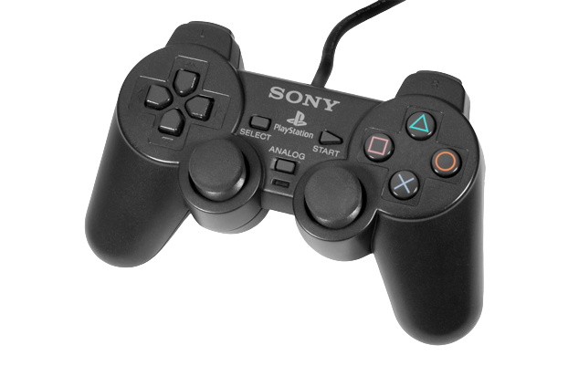
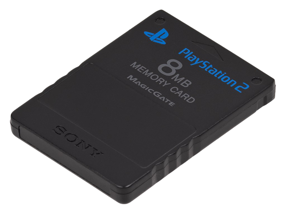
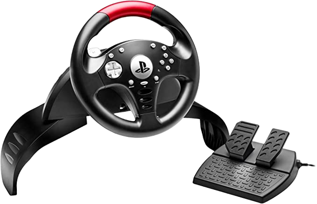

Acessórios e periféricos produzidos e comercializados para o PS2
Controle
Esse é o controle oficial do console. A Sony manteve a forma e nome do controle do PS1 e também melhorou suas funções como vibração e intensidade de pressão dos botões.
Memory Card
O Memory Card é um dos acessórios fundamentais do Playstation 2, o qual permite salvar o progresso nos diferentes jogos. A versão oficial deste dispositivo de armazenamento tem um tamanho de 8 MB, embora tenha sido vendido oficialmente de 16 MB e outras empresas tendo passado a fabricar até 128 MB de capacidade.
Volante
Esse é o volante oficial do PS2, criado pela Logitech para uso no jogo Gran Turismo 4. Poucos jogos além deste são compatíveis com ele. Mas foi um acessório bastante requisitado na época.